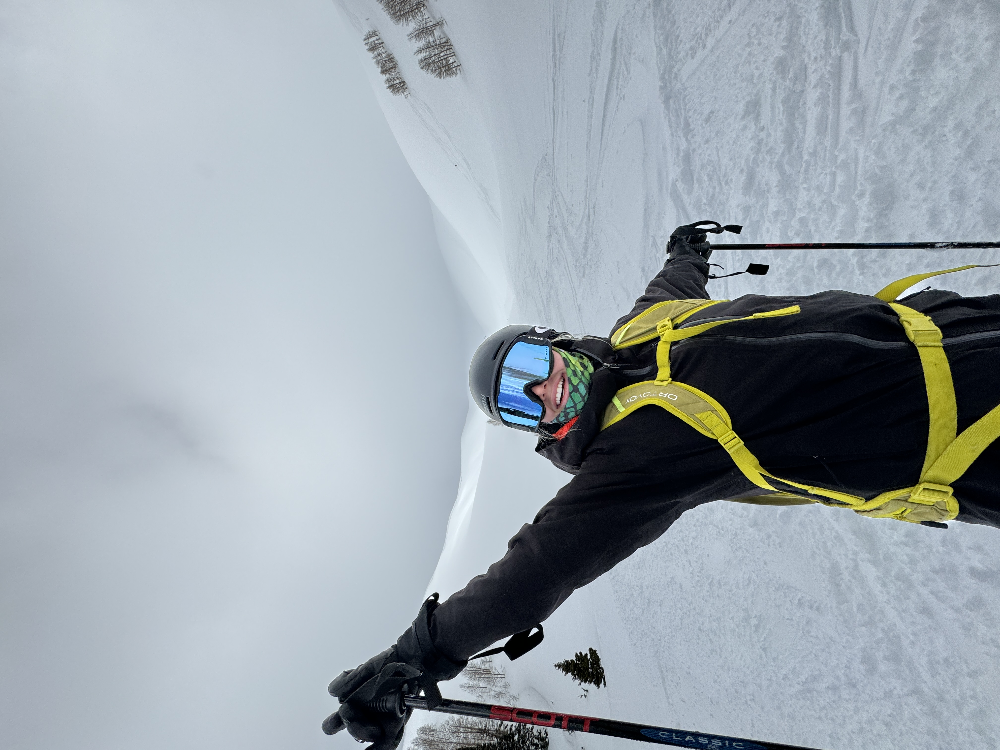

The All Inclusive Utah Ski Guide!
My Favorite Utah Ski Resorts Ranked
-
Alta Ski Resort
-
Established 1939
-
Snowbird Ski Resort
-
Established 1971
- Solitude Ski Resort
-
Established 1957
-
Snowbasin Ski Resort
-
Established 1940
Alta Ski Resort- The Best Snow On Earth
Alta is for skiers! They have been around for 100 years. No snowboarders are allowed, which makes the resort magical. Die hard skiers farm the snow, keeping the snow pristine for days. Also, mogouls are nice and tight. Alta has six lifts, makingi it one of the smaller resorts on the Wasatch Front. Some of the best terrain is located off of Collins. When the lines are long, I love to ski Sugarloaf and Supreme. It is tucked into the top of Little Cottonwood Canyon, however, where you can find the best snow on earth. Alta is a small ski town, making for fun vibes. One of my favorite ways to spend the ski day is a barbeque in the parking lot after! To find Altas website, Click Here.
Snowbird
Snowbird is located up Little Cottonwood Canyon right below Alta! Unlike Alta, Snowbird allows snowboarders. Snowbird is a challenging resort with steep terrain. There is something for everyone here. Even the most advance skiers will find something that pushes them. I love Snowbird because the location provides great snow with 14 ski lifts. You can ski here for days without ever skiing the same run twice. Snowbird is also the only resort left in the Cottonwoods that allows you to visit without a parking reservation. It is great if you plan a last minute trip.
Solitude
Ranked at number three is Solitude! Solitude is located up Big Cottonwood Canyon. One of the biggest perks of Solitude is that if you arrive in a car of 4 people, parking is free. Some of my favorite terrain is located at the very top in HoneyComb Canyon. There is a much wider variety of skill levels at Solitude compared to Alta and Snowbird which helps the snow on the advanced terrain stay fresher for longer.
Bonus! My favorite song to ski to!

Back to top of page